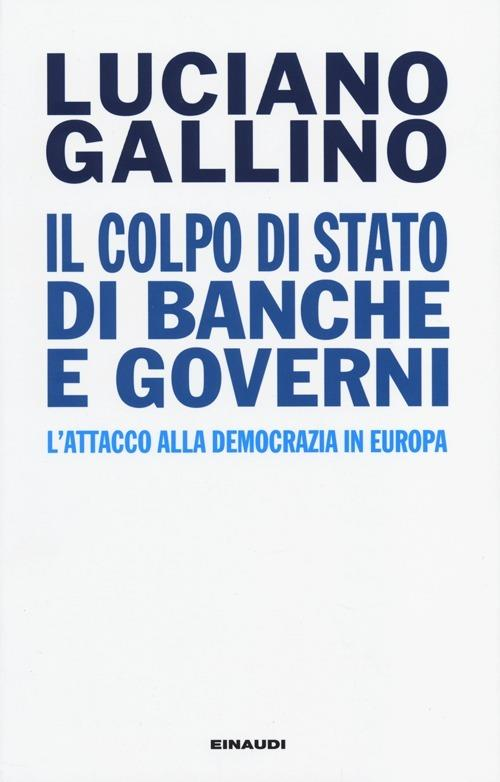
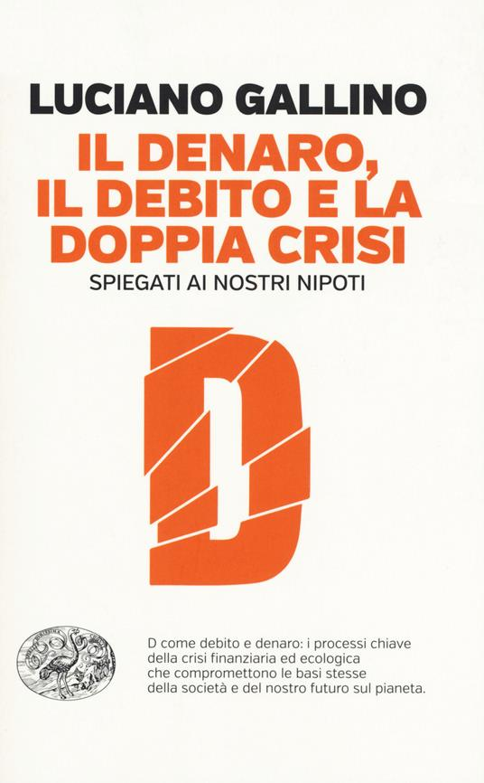
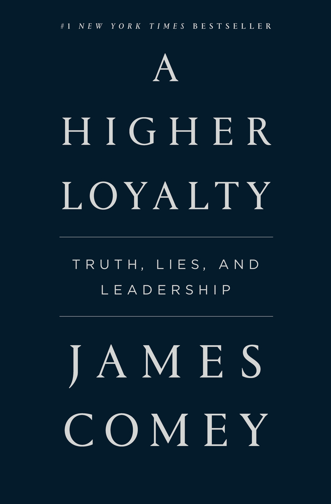
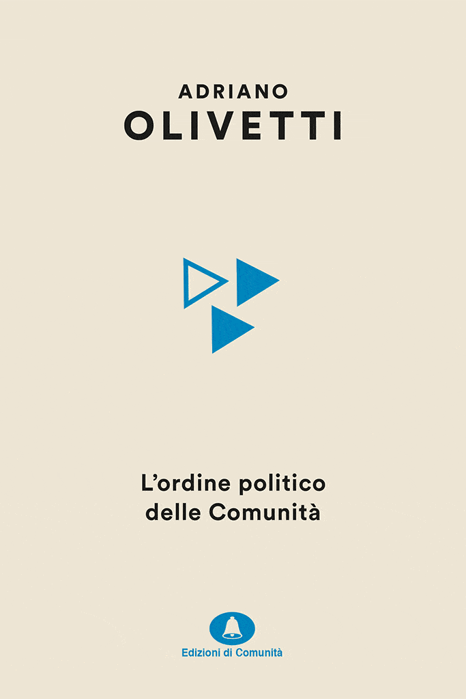
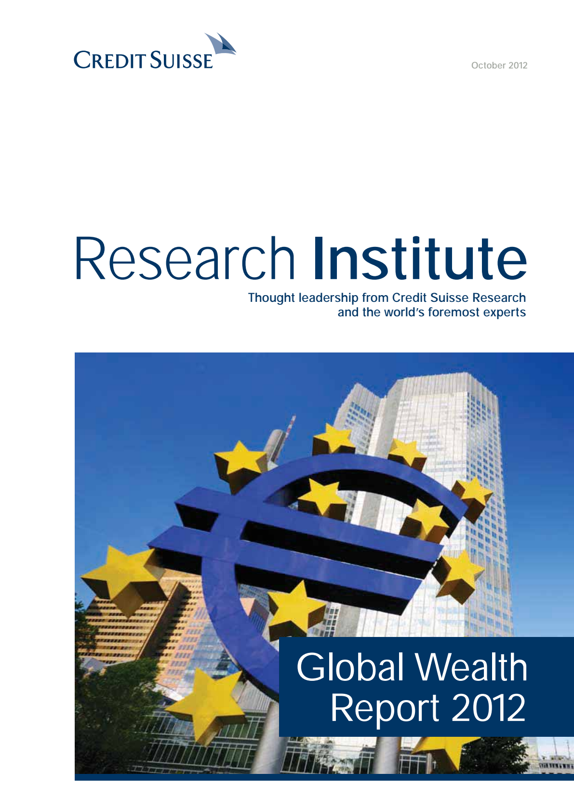

38:23 · 7 OPERE
Cenni su un libro di Luciano Gallino
Il filo del discorso
Il contributo presenta Il colpo di Stato di banche e governi di Luciano Gallino e ne ricorda l’autore come esempio di intellettuale impegnato nella comprensione dei rapporti fra economia e società. Un passo di Il denaro, il debito e la doppia crisi spiegati ai nostri nipoti introduce la ricerca di modelli umani dotati di consistenza etica.
Leggi la sintesi completaRiduci la sintesi
Il relatore contrappone questa esigenza alle celebrità mediatiche e discute il rapporto fra televisione, lettura e possibilità di approfondire: il suo obiettivo dichiarato è invitare a leggere i libri, anziché sostituirli con un riassunto. La formazione di Gallino nell’esperienza Olivetti apre una parentesi sulle proposte dei fratelli Adriano e Massimo. Nella parte centrale il saggio del 2013 diventa il punto di accesso a una critica della finanziarizzazione, della gestione della crisi del 2007–2008, dell’austerità e della distribuzione della ricchezza. Il relatore insiste sul ruolo di governanti, dirigenti, economisti e intellettuali, sostenendo che le strutture agiscono attraverso persone e scelte. La chiusura interroga il significato di libertà ed uguaglianza attraverso un passo di Daniel Patrick Moynihan. La scheda distingue i testi e i dati storici verificati dalle tesi di Gallino e del relatore, dalle generalizzazioni sui media e dalle analogie morali non dimostrate.
I libri nel discorso

Il colpo di Stato di banche e governi. L’attacco alla democrazia in Europa
Note sul riferimento
Copertina: Copertina Einaudi, Passaggi, Torino, 2013, VI + 345 pagine, ISBN cartaceo 9788806213404; catalogo commerciale: 29 ottobre 2013. Edizione elettronica distinta, ISBN 9788858411513.
Copertina dal catalogo Einaudi: autore, titolo e sottotitolo sono leggibili. Autore, editore e anno 2013 sono espliciti nel video; non si certifica che questa fotografia sia il suo singolo esemplare.
Einaudi 2013 e autore Gallino espliciti in apertura; titolo richiamato a 1059 secondi e più brani successivamente letti.

Il denaro, il debito e la doppia crisi spiegati ai nostri nipoti
Note sul riferimento
Copertina: Copertina Einaudi, Passaggi, Torino, 2015, 200 pagine, ISBN 9788806228347; catalogo commerciale: 13 ottobre 2015.
Copertina autentica con titolo arancione, grande lettera D e marchio Einaudi. Il titolo è normalizzato al plurale spiegati, riscontrato nel catalogo, rispetto alla flessione automatica incerta del parlato. Il volume del 2015 è distinto dal saggio centrale del 2013; le crisi economico-finanziaria ed ecologica non sono ridotte a due nomi del medesimo debito.
Autore e titolo espliciti, con passo della prefazione sul tipo di persona da ammirare.

A Higher Loyalty: Truth, Lies, and Leadership
Identificazione probabile
Note sul riferimento
Copertina: Copertina dell’edizione inglese Flatiron Books, 2018, ISBN 9781250192455, 304 pagine nel catalogo dell’editore; immagine del servizio ufficiale Macmillan. Distinta dalla brossura ampliata del 2019, ISBN 9781250192479.
Copertina autentica blu scuro con titolo, sottotitolo e nome Comey, fornita dal servizio editoriale. Il libro e l’autore sono identificati per contesto, non pronunciati nel filmato. L’intervista ABC conferma la promozione del libro e il tema della leadership, ma non è certificata come la specifica intervista ricordata dal relatore; non si trasformano i giudizi di Comey in diagnosi psicologiche oggettive.
Ex direttore FBI licenziato dal presidente e libro in presentazione, senza nome o titolo: contesto compatibile con Comey e A Higher Loyalty, 2018.

Crepuscolo
Note sul riferimento
Copertina: Originale tedesco, 1934
Crepuscolo di Horkheimer esplicito, nel discorso sulla disponibilità editoriale.
Per viver meglio. Proposta per un sistema economico-sociale
Identificazione probabile
Note sul riferimento
Copertina: Copertina Bollati Boringhieri, 1994, collana Universale, a cura di Carlo Ossola, ISBN 9788833908533. Il testo è documentato nella stampa romana Il Giornale d’Italia del 1949 dalla biblioteca storica di Adriano.
Copertina del volume, con autore, titolo e curatore. Alcuni cataloghi espandono viver in vivere; si mantiene la forma della copertina e della bibliografia storica. Senza osservazione del volume a schermo non si certifica questo titolo o l’edizione come citazione esplicita: la candidatura resta probabile.
Massimo Olivetti e un suo volume mostrato, senza titolo pronunciato; Per viver meglio è candidato probabile, non conferma del fotogramma.

L’ordine politico delle Comunità
Note sul riferimento
Copertina: Copertina della nuova edizione, Edizioni di Comunità, marzo 2021, collana Olivettiana, a cura di Davide Cadeddu, 360 pagine, ISBN 9788832005509. Originale: Nuove Edizioni Ivrea, 1945.
Immagine autentica dell’editore: fondo crema, autore nero, motivo di triangoli azzurri e marchio Edizioni di Comunità. È la ristampa del 2021, non la prima del 1945 menzionata nel video né la precedente edizione del 2014. La descrizione del progetto comunitario non equivale ad attribuire un unico modello a tutta la storia dell’azienda.
Adriano Olivetti, L’ordine politico delle Comunità e prima pubblicazione del 1945 espliciti.

Global Wealth Report 2012
Identificazione probabile
Note sul riferimento
Copertina: Copertina originale del rapporto di ottobre 2012, Credit Suisse Research Institute, 64 pagine; grafico The global wealth pyramid a p. 18 con rinvio al Global Wealth Databook 2012. Nessun ISBN ricavato arbitrariamente.
Copertina autentica resa integralmente dal PDF: logo Credit Suisse, Research Institute, data ottobre 2012, titolo e fotografia del simbolo dell’euro. È un rapporto diverso dal Databook citato come fonte del grafico. Non si certifica che il relatore abbia letto direttamente questo rapporto o che il suo titolo sia stato nominato.
Numeri letti da Gallino coincidenti con la piramide della ricchezza di pagina 18 del rapporto 2012; identificazione della fonte sottostante, non titolo pronunciato.